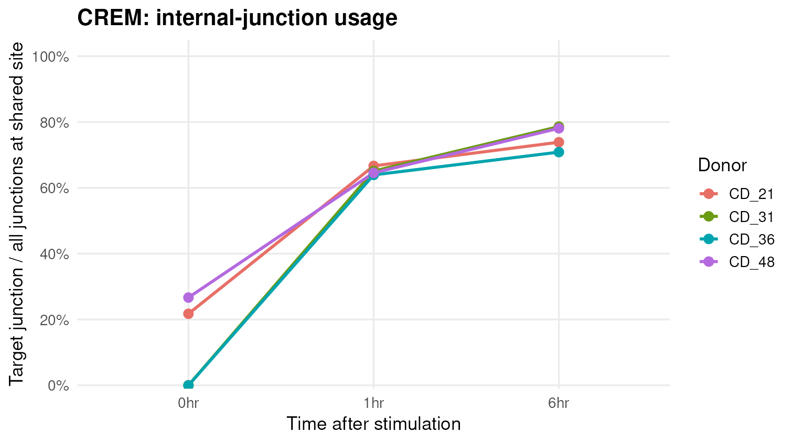
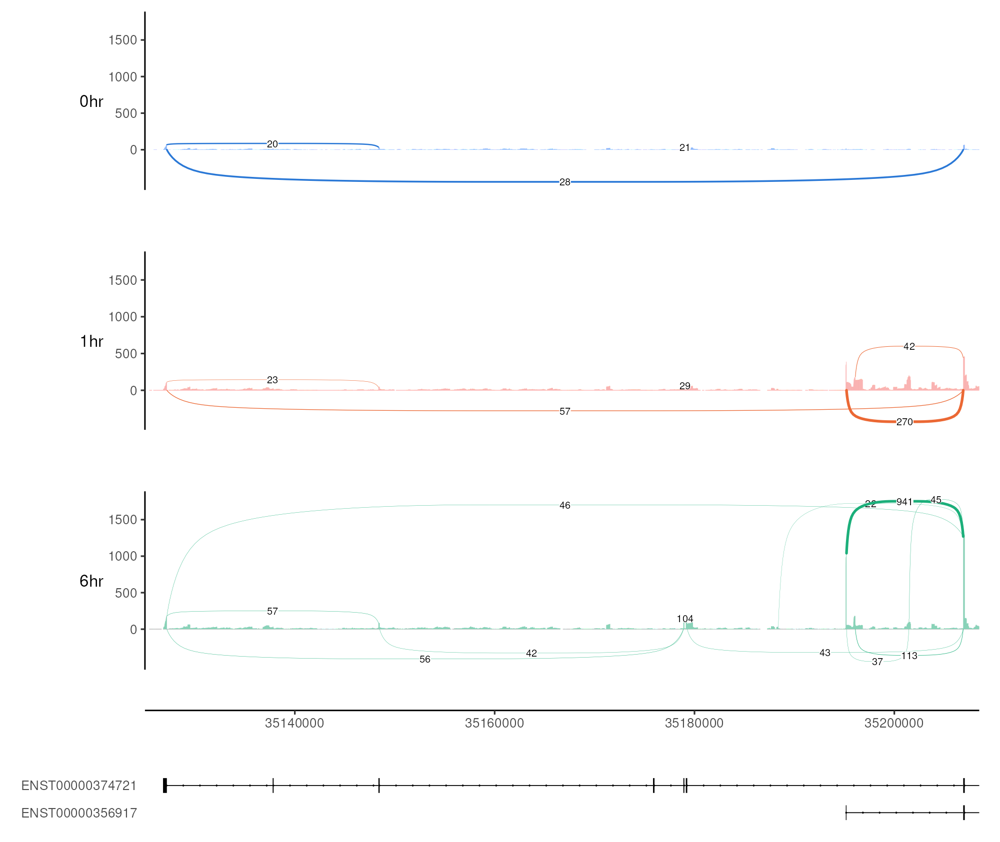
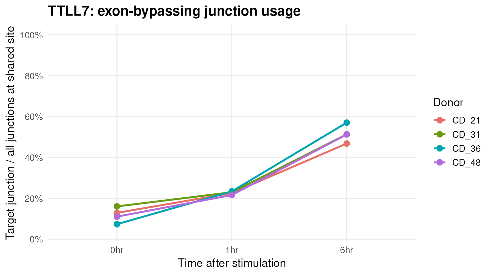
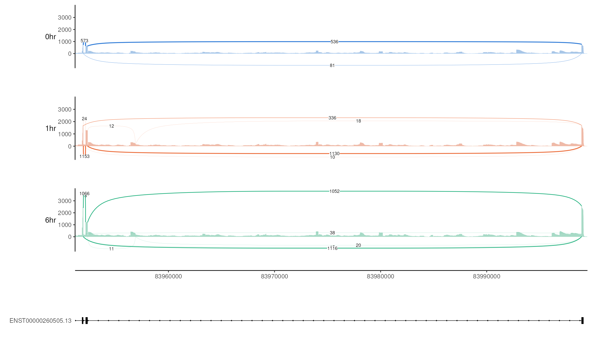

Last updated: 2026-09-23
Checks: 5 1
Knit directory:
crem_rate_explanation_revision/
This reproducible R Markdown analysis was created with workflowr (version 1.7.1). The Checks tab describes the reproducibility checks that were applied when the results were created. The Past versions tab lists the development history.
Great job! The global environment was empty. Objects defined in the global environment can affect the analysis in your R Markdown file in unknown ways. For reproduciblity it’s best to always run the code in an empty environment.
The command set.seed(20260908) was run prior to running
the code in the R Markdown file. Setting a seed ensures that any results
that rely on randomness, e.g. subsampling or permutations, are
reproducible.
Great job! Recording the operating system, R version, and package versions is critical for reproducibility.
Nice! There were no cached chunks for this analysis, so you can be confident that you successfully produced the results during this run.
Great job! Using relative paths to the files within your workflowr project makes it easier to run your code on other machines.
Tracking code development and connecting the code version to the
results is critical for reproducibility. To start using Git, open the
Terminal and type git init in your project directory.
This project is not being versioned with Git. To obtain the full
reproducibility benefits of using workflowr, please see
?wflow_start.
The screen asks whether the fraction of reads using a splice
junction changes between 0, 1 and 6 hours. It uses primary
alignments from donor-assigned cells on chromosomes 1–22. For each donor
and timepoint, the pipeline counts each N operation in an
alignment’s CIGAR string as one junction-supporting read. A junction’s
usage is its read count divided by the count of all junctions
sharing the same genomic start or end. The screen evaluates
both shared-boundary groupings; the biological donor or acceptor site
depends on gene strand.
The three comparisons are 0→1, 0→6 and 1→6 hours. To test a shared site, each of the four donors must have at least 10 site reads at the shallower timepoint and 20 at the deeper timepoint. An unobserved junction is assigned zero usage when its shared site passes this depth rule. A junction is retained if its usage changes in the same direction in every donor and the mean of the four donor-specific changes is at least 15 percentage points in magnitude. These are exploratory screening rules, not a statistical test.
This yields 1,022 candidate junction rows in 392 genes. Multiple rows can represent competing junctions or different comparisons of one event. We annotated the gene list with a curated activity-response list and simple GO keyword counts: 5 genes have an activity-response tag, 19 have a stronger neuronal GO tag, 48 have a weaker neuronal GO tag, and 320 have neither tag. The tags are prioritization aids, not validated functional assignments; for example, TTLL7 has only a weak automated GO tag despite experimental evidence for a neuronal role.
Search or filter the table to see all 392 genes. The last column is the largest absolute mean usage change for a gene across retained junctions and timepoint comparisons; it is not a gene-expression fold change or a significance score. The complete candidate gene TSV also includes genomic position, event labels and GO terms.
We selected CREM and TTLL7 from the screen because each has a large, same-direction junction shift in all four donors, enough reads to inspect the alignment, and relevant biological context. CREM is an established activity-responsive gene; TTLL7 has an experimentally supported neuronal function. They also illustrate different transcript patterns: a possible internal-promoter-associated junction and a junction consistent with bypassing an annotated exon. We checked both against the saved donor-specific junction tables and filtered regional BAMs. Biological relevance of a gene does not prove that its observed splice change is functionally regulated by stimulation.
An alternative intronic CREM promoter is known to produce the inducible ICER isoform (Molina et al., 1993). Our changing junction starts beside an annotated internal CREM transcript start, so promoter usage is plausible. These data alone do not identify the molecules as ICER transcripts.

CREM target-junction usage at 0, 1 and 6 hours in each of four donors. All donor percentages rise from baseline to 6 hours.
Each colored line is one donor, CD_21, CD_31, CD_36 or CD_48. A point is 100 × target-junction reads ÷ all junction reads ending at the shared acceptor, chr10:35,206,894, within that donor and timepoint. These percentages are junction-read fractions, not fractions of complete transcripts. The low 0-hour percentages for CD_31 and CD_36 are each 0/12 and 0/10 reads, respectively.
The target junction is chr10:35,195,215–35,206,894. The pooled counts give the following descriptive summary; pooling gives more weight to donors with more reads, whereas the screen weights donors equally when averaging their percentage-point changes.
| Time | Target reads | All reads at shared acceptor | Pooled usage |
|---|---|---|---|
| 0 hr | 9 | 60 | 15.0% |
| 1 hr | 270 | 414 | 65.2% |
| 6 hr | 941 | 1,241 | 75.8% |
Where does 1,241 come from? At 6 hours, we find every junction whose intron ends at chr10:35,206,894 in the primary alignments from the four donor-assigned cell sets. We count reads supporting the target junction (start 35,195,215) and reads supporting any other junction ending at that same acceptor. The counts add up as follows:
| Donor at 6 hr | Target-junction reads | Other junction reads at this acceptor | All reads at this acceptor |
|---|---|---|---|
| CD_21 | 274 | 97 | 371 |
| CD_31 | 305 | 83 | 388 |
| CD_36 | 141 | 58 | 199 |
| CD_48 | 221 | 62 | 283 |
| Pooled | 941 | 300 | 1,241 |
Thus 941 = 274 + 305 + 141 + 221 target-junction reads, while 1,241 = 371 + 388 + 199 + 283 = 941 + 300 reads on all junctions at that acceptor. The 300 competing reads are spread across 12 other junction starts, including starts with too few reads to label on the sashimi plot. The pooled rate is 941 / 1,241 = 75.8%. It is a fraction of junction-supporting reads at this splice site, not a fraction of all reads mapped anywhere in CREM. The mean of the four donor-specific 0→6-hour changes is +63.3 percentage points.

CREM sashimi plot: primary donor-assigned reads pooled across four donors within each timepoint. The junction of interest has 9, 270 and 941 reads at 0, 1 and 6 hours.
The short curve at the right connects 35,195,215–35,206,894. Its 1-hour and 6-hour arc labels are 270 and 941. The 0-hour count is 9, below this plot’s arc display threshold. Arc numbers are raw supporting-read counts; the denominator in the table includes every junction at the shared site, including alternatives that are not labeled here.
TTLL7 modifies neuronal tubulin. Experimental depletion suppressed nerve-growth-factor-stimulated neurite growth in PC12 cells and reduced beta-tubulin polyglutamylation in primary neurons (Ikegami et al., 2006). This supports a neuronal role for TTLL7, but the protein effect of this particular junction has not been established.

TTLL7 long-junction usage at 0, 1 and 6 hours in each of four donors. All donor percentages rise from baseline to 6 hours.
Each point is 100 × reads on the long junction ÷ all junction reads starting at the shared boundary, chr1:83,951,977, within one donor and timepoint. The same four donor colors are used as in the CREM plot.
The short competing junction spans chr1:83,951,977–83,952,186; the long target junction spans chr1:83,951,977–83,998,930. At 6 hours the pooled long-junction usage is 1,116 ÷ 2,198 = 50.8%.
| Time | Short-junction reads | Long-junction reads | All reads at shared site | Pooled long-junction usage |
|---|---|---|---|---|
| 0 hr | 573 | 81 | 659 | 12.3% |
| 1 hr | 1,153 | 336 | 1,491 | 22.5% |
| 6 hr | 1,066 | 1,116 | 2,198 | 50.8% |
For TTLL7, the same rule applies at its shared site: the 6-hour denominator is 2,198 = 1,116 long-junction + 1,066 short-junction + 16 other-junction reads (also 660 + 604 + 312 + 622 across the four donors). At 0 and 1 hours, other alternatives contribute 5 and 2 reads. Long-junction usage rises in each donor from 0 to 6 hours; the mean donor-specific change is +39.8 percentage points.

TTLL7 sashimi plot: primary donor-assigned reads pooled across four donors within each timepoint. The short junction has 573, 1153 and 1066 reads, and the long junction has 81, 336 and 1116.
TTLL7 is on the minus strand. The short arc is at the far left; the long arc reaches from the left to the far right. In the displayed GENCODE reference transcript, the long junction bypasses a 201-nucleotide exon, consistent with exon skipping. Arc placement above or below the coverage has no biological meaning. These reads do not establish complete isoforms or a protein consequence.
The trends describe donor-assigned junction reads pooled across cell types. They do not separate cell-type composition changes from within-cell regulation, and the screen has no formal replicate-aware test or multiple-testing correction. BDNF is another activity-responsive candidate, but its leading change here concerns alternative first exons/promoters.
The screen is implemented in
7.sashimi/14.find_candidates_v2.R; the gene annotations in
7.sashimi/15.annotate_candidate_genes.R; and the donor
plots in 7.sashimi/17.plot_example_trends.R. Source counts
and candidate tables are in long_read_processed/junctions/,
with the plot’s donor-level
numerator and denominator table provided here for direct
checking.
Related pages: data summary, exon structure, and annotation QC.
sessionInfo()R version 4.2.0 (2022-04-22)
Platform: x86_64-pc-linux-gnu (64-bit)
Running under: Red Hat Enterprise Linux 8.4 (Ootpa)
Matrix products: default
BLAS/LAPACK: /software/openblas-0.3.13-el8-x86_64/lib/libopenblas_skylakexp-r0.3.13.so
locale:
[1] LC_CTYPE=C.UTF-8 LC_NUMERIC=C LC_TIME=C.UTF-8
[4] LC_COLLATE=C.UTF-8 LC_MONETARY=C.UTF-8 LC_MESSAGES=C.UTF-8
[7] LC_PAPER=C.UTF-8 LC_NAME=C LC_ADDRESS=C
[10] LC_TELEPHONE=C LC_MEASUREMENT=C.UTF-8 LC_IDENTIFICATION=C
attached base packages:
[1] stats graphics grDevices utils datasets methods base
other attached packages:
[1] workflowr_1.7.1
loaded via a namespace (and not attached):
[1] Rcpp_1.1.1-1.1 bslib_0.3.1 jquerylib_0.1.4 compiler_4.2.0
[5] pillar_1.9.0 later_1.3.0 git2r_0.30.1 tools_4.2.0
[9] getPass_0.2-2 digest_0.6.29 jsonlite_2.0.0 evaluate_0.15
[13] lifecycle_1.0.4 tibble_3.2.1 pkgconfig_2.0.3 rlang_1.1.2
[17] cli_3.6.2 rstudioapi_0.14 crosstalk_1.2.0 yaml_2.3.5
[21] xfun_0.59 fastmap_1.1.0 httr_1.4.8 stringr_1.5.0
[25] knitr_1.51 htmlwidgets_1.6.2 sass_0.4.1 fs_1.5.2
[29] vctrs_0.6.1 DT_0.22 rprojroot_2.0.3 glue_1.6.2
[33] R6_2.5.1 processx_3.5.3 fansi_1.0.3 otel_0.2.0
[37] rmarkdown_2.31 callr_3.7.0 magrittr_2.0.3 whisker_0.4
[41] ellipsis_0.3.2 ps_1.7.0 promises_1.2.0.1 htmltools_0.5.7
[45] httpuv_1.6.5 utf8_1.2.2 stringi_1.7.6